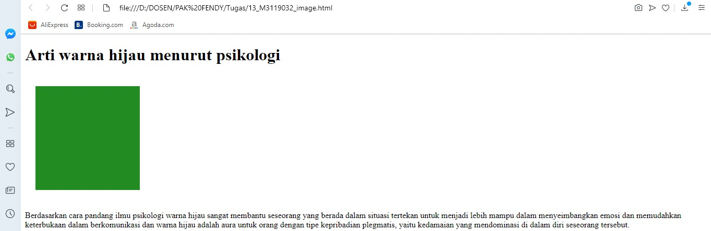

Menyisipkan Gambar
HTML menyediakan sebuah tag khusus untuk menampilkan gambar atau image.
Tag HTML yang berfungsi untuk menampilkan gambar adalah tag img.
Codingan
<!DOCTYPE html>
<html>
<head>
<title>Menyisipkan Gambar</title>
</head>
<body>
<h1>Arti warna hijau menurut psikologi</h1>
<img src="warna hijau.jpg"hspace="20" vspace="20" align"left" width="200" height="200" alt=" gambar warna hijau" />
<p>
Berdasarkan cara pandang ilmu psikologi warna hijau sangat membantu
seseorang yang berada dalam situasi tertekan untuk menjadi lebih mampu
dalam menyeimbangkan emosi dan memudahkan keterbukaan dalam berkomunikasi
dan warna hijau adalah aura untuk orang dengan tipe kepribadian plegmatis,
yaitu kedamaian yang mendominasi di dalam diri seseorang tersebut.
</p>
</body>
</html>
Hasil codingan

Analisis
script diatas digunakan untuk menyisipkan gambar ke dalam web, gambar yang saya masukkan adalah gambar
warna hijau.jpg, dengan panjang & lebar 200 x 200.
Back